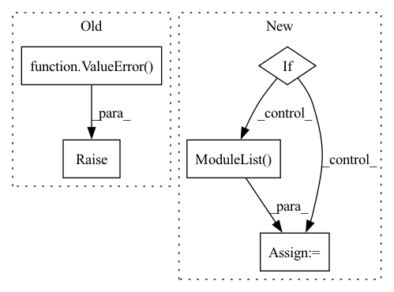

Pattern ID :39496
Before Change
elif self.config["global_pool"] == "sum":
self.global_pool = geometric.global_add_pool
else: // max
raise ValueError( "{} pooling is not supported" )
def forward(self, positions):
batch_size = positions.size(0)
n_vertices = positions.size(1)After Change
geometric.DynamicEdgeConv(_MLP(other_layers_mpl), k=self.config["k_neighbors"], aggr=self.config["EConv_aggr"]))
// pooling layers
if self.config["graph_pooling"]:
self.gpool_layers = nn.ModuleList()
for _ in range(0, self.config["conv_depth"]):
self.gpool_layers.append(
DynamicTopKPool(self.config["EConv_feature"], k=self.config["k_neighbors"], pool_ratio=self.config["pool_ratio"]))
In pattern: SUPERPATTERN
Frequency: 3
Non-data size: 5
Instances Fragment ID: 112144726
Project Name: maria-korosteleva/garment-pattern-estimation
Commit Name: 58004a47b8e9b3137f4c2616414bb5405d5647ed
Time: 2020-09-24
Author: mariako@kaist.ac.kr
File Name: nn/net_blocks.py
M Class Name: EdgeConvFeatures
N Class Name: EdgeConvFeatures
M Method Name: __init__(3)
N Method Name: __init__(3)
M Parent Class: nn.Module
N Parent Class: nn.Module
M File Name: nn/net_blocks.py
N File Name: nn/net_blocks.py
M Start Line: 127
M End Line: 136
N Start Line: 95
N End Line: 143
Before Change
elif dim ==3:
make_conv = ConvNormActive3D
else:
raise ValueError( "dim should be 2 or 3")
// 构建projection
if self.out_channels != self.in_channels: // 输入输出channel不一样，则添加projection改变输入通道,用于不同stage的过渡处
self.projection = make_conv(in_channels=self.in_channels,out_channels=self.out_channels)After Change
self.conv_list = nn.ModuleList([])
self.conv_list.append(ConvNormActive(in_channels, out_channels, kernel_size=3, norm=norm, active=active, gn_c = gn_c, dim = dim))
self.conv_list.append(ConvNormActive(out_channels, out_channels, kernel_size=3, norm=norm, active="None", gn_c = gn_c, dim = dim))
elif = nn.ModuleList( [])
self.conv_list.append(ConvNormActive(in_channels, middle_channels, kernel_size=1, norm=norm, active=active, gn_c = gn_c, dim = dim, padding=0))
self.conv_list.append(ConvNormActive(middle_channels, middle_channels, kernel_size=3, norm=norm, active=active, gn_c = gn_c, dim = dim))
self.conv_list.append(ConvNormActive(middle_channels, out_channels, kernel_size=1, norm=norm, active="None", gn_c = gn_c, dim = dim, padding=0))
else: Fragment ID: 112144724
Project Name: wamawama/wama_modules
Commit Name: b2bf89e72b262002500e8271f984d6f8afac7eb3
Time: 2022-10-25
Author: wmy19970215@gmail.com
File Name: wama_modules/BaseModule.py
M Class Name: ResBlock
N Class Name: ResBlock
M Method Name: __init__(9)
N Method Name: __init__(6)
M Parent Class: nn.Module
N Parent Class: nn.Module
M File Name: wama_modules/BaseModule.py
N File Name: wama_modules/BaseModule.py
M Start Line: 362
M End Line: 384
N Start Line: 357
N End Line: 389
Before Change
}
if isinstance(shortcut_combine_fn, str):
if shortcut_combine_fn not in combine_functions:
raise ValueError(
""shortcut_combine_fn" must be one of %s or a user-"
"defined function that combines two arguments and takes "
"`init_params` as an argument." % combine_functions.keys()
)
self.shortcut_combine_fn = combine_functions[shortcut_combine_fn]
else:
self.shortcut_combine_fn = shortcut_combine_fnAfter Change
)
self.shortcut_type = shortcut_type
self.shortcut_projection = shortcut_projection
if shortcut_projection:
self.projections = torch.nn.ModuleList()
self.shortcut_combine_fn = shortcut_combine_fn
def append(self, layer, *args, **kwargs):
Appends the specified module to the shortcut model. Fragment ID: 112144721
Project Name: speechbrain/speechbrain
Commit Name: be6ecf4066cc14bae3fdb83fda8c3993e0580349
Time: 2020-08-29
Author: plantinga.peter@protonmail.com
File Name: speechbrain/nnet/containers.py
M Class Name: ConnectBlocks
N Class Name: ConnectBlocks
M Method Name: __init__(5)
N Method Name: __init__(5)
M Parent Class: torch.nn.Module
N Parent Class: torch.nn.Module
M File Name: speechbrain/nnet/containers.py
N File Name: speechbrain/nnet/containers.py
M Start Line: 142
M End Line: 172
N Start Line: 139
N End Line: 151